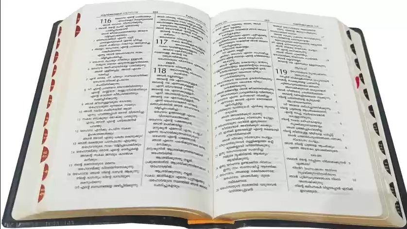

성경이란 무엇인가요?
그저 하나의 큰 책인가요?
성경에 대해 처음 알게 되는 것 중 하나는 성경이 단일한 책이 아니라 66권의 책들로 이루어진 모음집이라는 사실입니다! 우리가 흔히 ‘책’이라고 부르지만, 성경은 사실 이야기, 역사, 시와 노래, 전기, 그리고 여러 편지들로 구성되어 있습니다. (당시에는 이메일이 없었으니까요!)
성경은 다양한 종류의 글들로 이루어져 있기 때문에, 대부분의 현대 책처럼 처음부터 끝까지 순서대로 읽는 경우는 많지 않습니다 (물론 그렇게 읽을 수도 있습니다). 대신 신자들은 보통 예수님의 이야기나 하나님께 드리는 찬송과 같은 특정 구절을 찾기 위해 성경을 읽습니다.
오른쪽 그림은 성경의 책들이 여러 범주(혹은 장르)로 어떻게 분류되어 있는지를 보여줍니다.
성경이 이렇게 많은 책들로 구성되어 있는 이유를 이해하려면, 성경의 역사와 기록 과정을 살펴보는 것이 도움이 됩니다. 약 3,000년 전(정확한 초기 시기는 불분명하지만), 하나님께서는 인류에게 전할 메시지를 기록하도록 사람들에게 영감을 주기 시작하셨습니다. 약 1,600년에 걸쳐, 다양한 시대와 세계 여러 지역에서 적어도 40명의 작가들이 하나님께서 그들에게 주신 영감을 기록했습니다. 이렇게 다양한 작가들이 있었음에도 불구하고, 성경은 기본적으로 하나의 이야기를 전달합니다. 그 이야기는 사람들을 예수님께 이끄는 것이며, 예수님은 하나님께서 세상에 전하신 궁극적인 메시지입니다.
성경은 매우 큰 책처럼 보일 수 있습니다. 어떤 사람들은 성경이 신비롭거나 이해하기 어렵다고 생각할 수도 있고, 심지어 성경은 오직 목사나 신부만이 진정으로 이해할 수 있다고 들었을 수도 있습니다. 하지만 사실, 성경은 누구나 접근할 수 있고 이해할 수 있는 내용입니다.

그래서 성경이 진정으로 무엇인지 아는 것이 중요합니다. 성경은 모든 사람을 위한 하나님의 메시지로, 일반 사람들이 (모든 사람!) 읽을 수 있도록 의도된 것입니다.

"테스트먼트"란 무엇인가요?
"테스트먼트"라는 단어는 '유언장'을 떠올리게 할 수 있습니다. 유언장은 사람이 사망할 때 자신의 재산과 소유물을 어떻게 처리할지를 밝히는 법적 문서입니다. 성경에서는 예수님께서 이 땅에 오시기 훨씬 전에, 하나님께서 사람들에게 오직 자신만을 하나님으로 알고 예배하라고 명하셨습니다. 그에 대한 약속으로, 하나님은 사람들의 죄를 용서해 주겠다고 말씀하셨습니다. 성경의 첫 번째 부분인 구약은 인류가 하나님의 뜻에 어떻게 반응했는지를 다루고 있습니다.
인류가 하나님의 뜻을 따르지 않았기 때문에, 하나님은 사람들을 용서할 새로운 방법을 마련하셨습니다. 그것은 하나님의 외아들 예수님을 이 땅에 보내어 그들의 죄를 대신 짊어지고 죽게 하신 것입니다. 예수님과 그를 따르기로 선택한 사람들의 이야기는 하나님이 인류를 위해 마련한 새로운 유언, 즉 신약의 이야기입니다. 그래서 성경은 구약과 신약으로 나뉘며, 구약은 예수님이 오시기 전, 신약은 예수님이 오신 후에 쓰여진 책들로 구분됩니다.
성경의 구절을 찾는 방법
성경을 쉽게 읽으려면 성경의 책 제목에 익숙해지는 것이 매우 유용합니다. 처음에는 어려울 수 있지만, 모든 책 제목을 순서대로 외우는 것이 큰 도움이 됩니다. 매일 10개의 책 제목을 암기하는 도전을 해보세요. 새로운 10개를 외울 때는, 이전에 암기한 제목들도 복습하며 순서대로 모두 외울 수 있도록 하세요.
아래에 성경의 책 목록이 나와 있으니 암기할 때 참고하세요. 몇몇 제목은 발음이 어려울 수 있습니다. 예를 들어, 욥기(Job)는 끝에 "e"가 있는 것처럼 "조브(jobe)"라고 발음됩니다. 책 제목의 발음이 궁금하시다면, 성경 공부 선생님이나 교회의 목사님께 주저하지 말고 물어보세요.
성경을 아무 페이지나 열어보면 번호가 매겨진 작은 단락들이 보일 것입니다. 이를 "구절"이라고 부릅니다. 구절들이 모여 하나의 "장"을 이루지만, 모든 장이 같은 수의 구절을 포함하고 있는 것은 아닙니다. 구약의 오바댜서와 신약의 필레몬서, 요한 2서와 3서, 유다서는 장으로 나뉘어 있지 않은 예외입니다.

사람들이 성경에서 특정 구절을 언급할 때는 "장과 구절" 방식으로 표현합니다. 예를 들어, 요한복음 3장 16절을 찾으라고 하면, 보통 요한복음 3:16 이렇게 표기됩니다.
성경의 책 이름을 외워두면 아주 유용합니다. 예를 들어, 요한복음이 신약 성경의 네 번째 책이라는 것을 알 수 있습니다. 요한복음을 찾은 후에는 3장을 찾아보고, 마지막으로 16절로 가면 됩니다. 성경 구절의 모든 참조는 이렇게 요한복음 3:16으로 표기됩니다(때때로 책의 약어를 사용하기도 합니다). 여러 구절을 참조할 경우에는 출애굽기 20:1-17처럼 씁니다. 이는 출애굽기 20장의 1절부터 17절까지를 찾으라는 뜻입니다. 아주 쉽죠?
구약 성경
- 창세기
- 출애굽기
- 레위기
- 민수기
- 신명기
- 여호수아
- 사사기
- 룻기
- 사무엘상
- 사무엘하
- 열왕기상
- 열왕기하
- 역대상
- 역대하
- 에스라
- 느헤미야
- 에스더
- 욥기
- 시편
- 잠언
- 전도서
- 아가
- 이사야
- 예레미야
- 예레미야 애가
- 에스겔
- 다니엘
- 호세아
- 요엘
- 아모스
- 오바댜
- 요나
- 미가
- 나훔
- 하박국
- 스바냐
- 학개
- 스가랴
- 말라기
신약 성경
- 마태복음
- 마가복음
- 누가복음
- 요한복음
- 사도행전
- 로마서
- 고린도전서
- 고린도후서
- 갈라디아서
- 에베소서
- 빌립보서
- 골로새서
- 데살로니가전서
- 데살로니가후서
- 디모데전서
- 디모데후서
- 디도서
- 빌레몬서
- 히브리서
- 야고보서
- 베드로전서
- 베드로후서
- 요한일서
- 요한이서
- 요한삼서
- 유다서
- 요한계시록